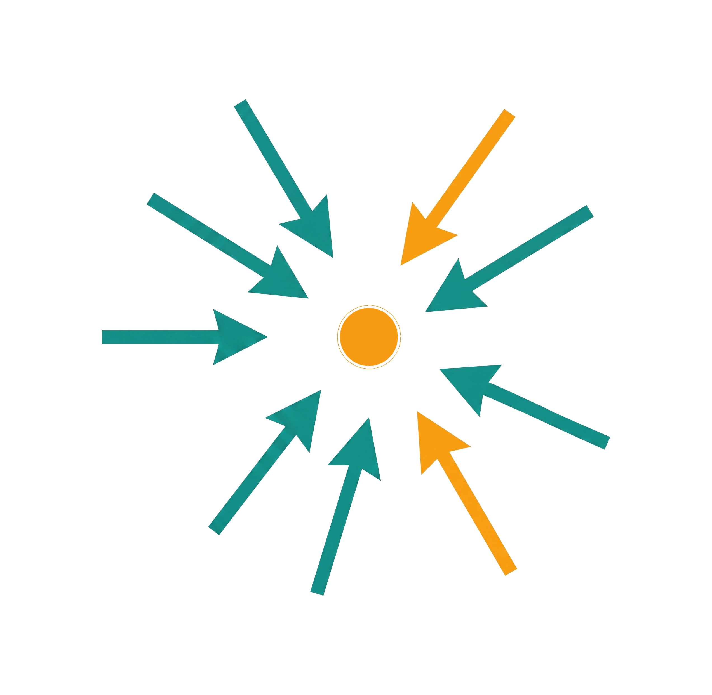
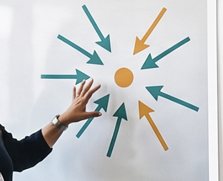
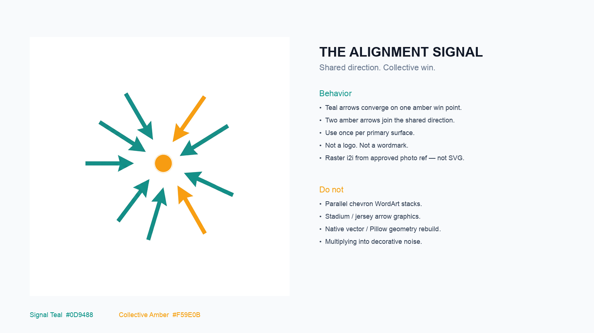

Samah Afifi · Identity approval
Creative Direction is already locked: Alignment Signal temporary stylescape. This page is the visual Identity packet built from it.
Judge the system in the images below: palette, signature, face/outfit canon, and early application proofs. Reply Identity approved if this is the brand system, or name the exact change.
01 · Temporary stylescape

02 · Face and wardrobe canon


03 · Signature (approved mark)



04 · Palette, type, and early applications


05 · Social / channel stand-ins


Reply with Identity approved to unlock applications, or name the exact change.
Private Identity review surface. Delivery and client send remain closed.